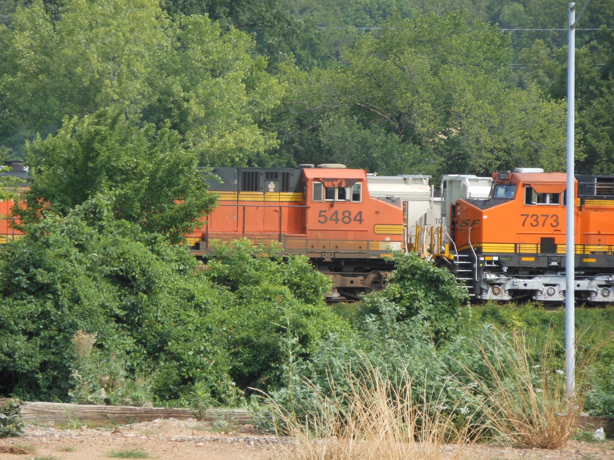

June 11, 2012 - Sapulpa, OK
Sapulpa, OK - Frisco 4500 Meteor Steam Engine
Sapulpa, OK - Frisco 4500 Meteor Steam Engine
Sapulpa, OK - Frisco 4500 Meteor Steam Engine
Sapulpa, OK - Texas Oil Derrick
Sapulpa, OK - Tulsa Sapulpa Union Railway passenger car
Sapulpa, OK - Frisco 4500 Meteor Steam Engine - drive wheels
Sapulpa, OK - Tanker and Frisco caboose
Sapulpa, OK - BNSF engine resting on a siding

Sapulpa, OK - BNSF engines nose-to-nose